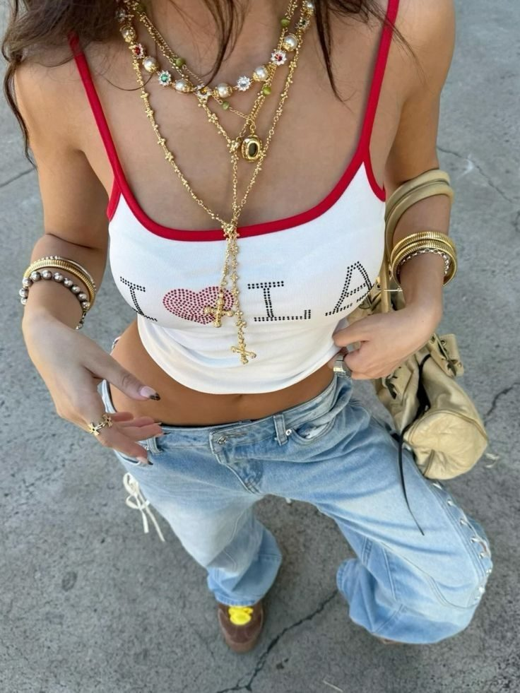
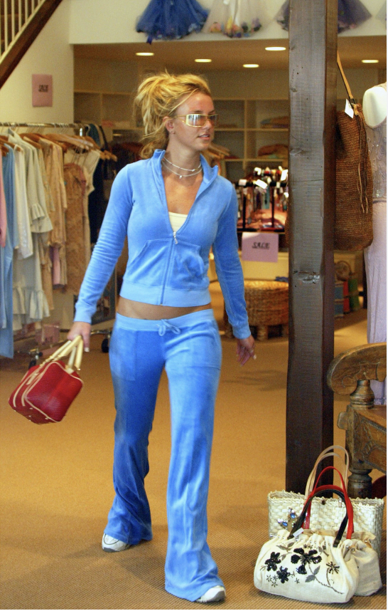

Y2K Nostalgia: Finding Comfort in the Past
Why is a generation that barely remembers the early 2000s so obsessed with its fashion? The massive resurgence of Y2K fashion—characterized by low-rise jeans, baby tees, and vibrant, clashing colors—is driven by a fascinating mix of mathematical trend cycles and deep psychological needs.
First, there is the math behind the trends. Fashion historians and trend forecasters often cite the "Nostalgia Pendulum" or the 20-year rule. Mathematical models of cultural trends show that styles reliably resurface exactly 20 to 22 years after their original peak. This is the exact amount of time it takes for a generation to grow up and begin feeling nostalgic for their youth, while a new, younger generation discovers the aesthetic for the very first time, viewing it as "vintage" rather than outdated.
But the appeal is heavily psychological, too. Psychologists point to a cognitive bias known as "rosy retrospection," where we remember the past more fondly than it actually was. For Gen Z, growing up in a fast-paced, highly digitized, and stressful world, the pre-smartphone era of the late 90s and early 2000s represents a seemingly simpler, more carefree time. Wearing Y2K fashion acts as a self-soothing mechanism. It provides psychological safety, escapism, and a tangible way to project the unapologetic optimism and fun associated with that era.
Text generated by Google Gemini
Source: Jonathan Frips
Source: Grazia Magazine